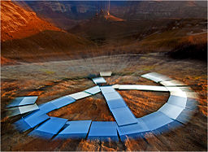
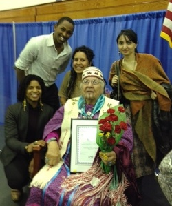

Friends,
Today on Earth Day, we join all those around the world in recognizing "the essential unity of all creation," as articulated in the Fellowship of Reconciliation's Statement of Purpose.
Well before the first Earth Day in 1970, FOR began pressing upon the global community to take seriously environmental degradation and its adverse impact on world peace. The Dai Dong, or the “Great Togetherness,” initiated by FOR Executive Secretary Alfred Hassler and Thich Nhat Hanh in the 1960s, produced "The Menton Statement” in May 1970 that linked the environment, poverty, and war and called for global environmental consciousness. Signed by more than 5,000 scientists globally, the statement garnered the engagement of Nobel laureates in physiology and medicine, Margaret Mead, and United Nations Secretary-General U Thant.
Your generous support has made our work possible through the years.
Today, the need to bring a moral and spiritual voice to concerns of climate change and environmental devastation is even more acute. A comprehensive new report from the Intergovernmental Panel on Climate Change recently announced in sobering language that global warming’s proven effects on weather, oceans, and land use will soon lead to greater poverty, loss of food supply, and potential violent conflicts over land and resources.
From the efforts of anti-GMO activist and FOR National Council member Ariel Vegosen, who just completed a four-month pilgrimage in India where GMOs are "a matter of life and death," to the organizing efforts of FOR fiscal sponsoree Interfaith Moral Action on Climate toward this week's "Reject and Protect" protests in Washington against the Keystone XL Pipeline; from our support of the Council of 13 Indigenous Grandmothers (recipient of FOR's 2013 Pfeffer Peace Award, and profiled in this recent article by Ymani Simmons) to the 100-mile Walk for Our Grandchildren; from hosting the Two Row Wampum on the Hudson River to marching by the San Francisco Bay for climate justice -- we are there.
Please make a generous donation today to the Fellowship of Reconciliation so that we can continue to mobilize and strengthen grassroots spiritual-centered action for environmental sustainability and creation care.
In grace and peace,
 Rev. Kristin Stoneking Rev. Kristin Stoneking
Executive Director
Fellowship of Reconciliation
Photos: Land art sculpture by Hein Waschefort, Maluti Mountains near Swaziland via Wikimedia Commons (top); Grandmother Agnes with FOR-USA's Shauen Pearce (lower left) and IFOR Fellows Amos Furaha, Rosario Quiroz, and Nurana Rajabova, December 2013, by Linda Kelly. |